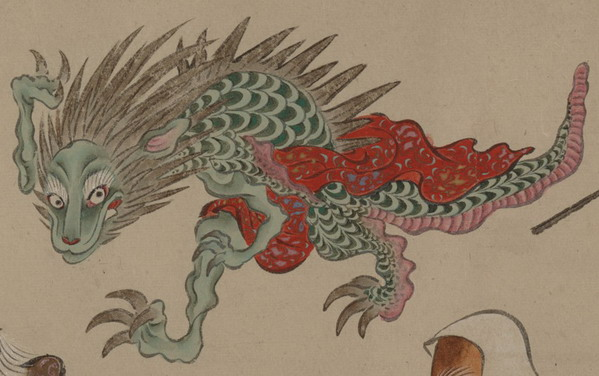

龍のような化物。たてがみが長く、鼻先は獣のようにも見える。背は緑色の鱗に覆われており、蛇腹のような腹は桃色である。大きな後脚を使って走っているように見える。足の爪は大きく、鋭い。腰の辺りに赤い着物のようなものをまとっている。
出典：親書誌：U426_nichibunken_0154：妖怪絵巻；ヨウカイエマキ／日付：2010／資源識別子：U426_nichibunken_0154_0023_0000
Copyright (c)2010- International Research Center for Japanese Studies, Kyoto, Japan. All rights reserved.